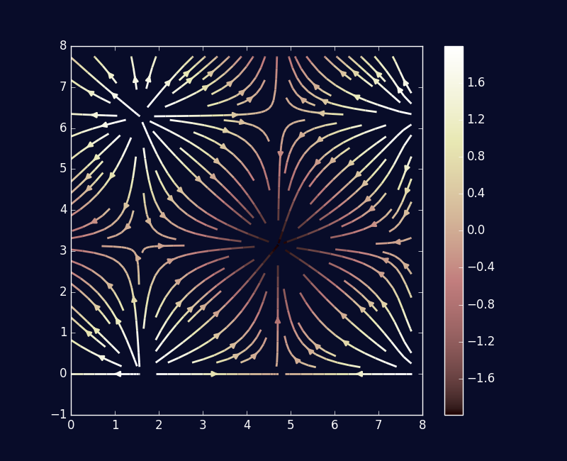

In this section we will introduce the Laplacian, an operator of distinguished importance in the theory of partial differential equations, probability theory, inverse problems, and the characterization of particular domains. We will define the Laplacian in terms of the gradient and the divergence: this is the definition most frequently used to generalize the Laplacian to other domains.
Let us first consider continuously differentiable real-valued functions on \(\mathbb{R}^n\). Let \(f\) be such a function. The well-known gradient of \(f\) is the vector-valued function denoted by grad \(f\) (alternatively \(\nabla f\)) and is given by the formula \[ \text{grad } f := (\frac{\partial f}{\partial x_1}, \frac{\partial f}{\partial x_2}, \ldots, \frac{\partial f}{\partial x_n}). \] The gradient is a natural generalization of the derivative of a function of a single variable. It possesses numerous interpretations and usages: perhaps the most ubiquitous of these is the fact that the gradient provides the direction of steepest ascent for \(f\). This makes the gradient of a function a tool frequently used for mathematical optimization, but we won’t be discussing that further here. If \(F\) is a vector field on \(\mathbb{R}^n\) and grad \(f = F\), we will refer to \(f\) as a potential function for \(F\).
Now let \(F = (F_1, F_2, \ldots, F_n)\) be a continuously differentiable vector field defined on \(\mathbb{R}^n\) (or a suitable subset thereof). The divergence of \(F\) is a measure of whether our vector field tends to act as a source or a sink. We define the divergence of \(F\) as \[ \text{div } F := \frac{\partial F_1}{\partial x_1} + \frac{\partial F_2}{\partial x_2} + \ldots + \frac{\partial F_n}{\partial x_n}. \] Much like the gradient, the divergence is another generalization of the derivative of a function of a single variable. For example, the divergence theorem says that under certain regularity conditions, \[ \int_{\partial \Omega} F \cdot \nu \ d\sigma = \int_{\Omega} \text{div } F \ dV \] where \(\Omega\) is a bounded open subset of \(\mathbb{R}^n\), \(\partial \Omega\) its boundary, \(\sigma\) is the boundary area on \(\partial \Omega\), and \(\nu\) is the outward pointing normal vector field on \(\partial \Omega\). After some inspection, one can recognize this theorem as but a generalization of the fundamental theorem of calculus from single-variable calculus, thereby tying in the divergence with the single-variable derivative.
Below we present the plot of the divergence of a simply defined vector field on \(\mathbb{R}^2\). Note that the divergence decreases near the points of attraction (the sinks) and increases near the areas of repulsion (the sources).

Suppose now that \(f\) is a twice continuously differentiable function defined now on \(\mathbb{R}^n\). We define the Laplacian of \(f\) as the real-valued function given by \[ \Delta f := (\text{div} \circ \text{grad}) (f). \] After working through the definition, one can see quickly that this is equivalent to defining the Laplacian as \[ \Delta f := \sum_{i=1}^n \frac{\partial^2}{\partial x_i^2} f. \] It is clear that the Laplacian serves as a form of a second order differential operator, albeit one in which no mixed partial derivatives are involved. Moreover, due to the definition as the composition of grad with div, the Laplacian comes built in with a ready interpretation: it measures the outward flux of the gradient vector field of \(f\).
The Laplacian is intricately tied to the definition and behavior of the second order linear partial differential equations. For example, the prototypical parabolic partial differential equation is the heat equation. Let \(\Omega\) be some subset of \(\mathbf{R}^n\), not necessarily bounded in this case. We wish to discover \(u(x, t)\) defined on \(\Omega \times \mathbb{R}^+\) such that
\[ \frac{\partial u}{\partial t} = \alpha \ (\Delta_x u) \] with \(\alpha\) defined as some positive constant and \(\Delta_x\) being used to represent that the Laplacian is acting through the spatial dimensions \(\mathbb{R}^n\) rather than the temporal dimension \(\mathbb{R}^+\). The heat equation, as evidenced by the name, is used to model the evolution of the distribution of heat in a given region over time. Solutions to the heat equation have very strong tendencies to smooth out over time; in fact, one finds that initial discontinuities specified through initial value conditions will instantly smooth out.
Now, with the heat equation, one can imagine the heat in the region eventually settling into a steady state, so that \(\frac{\partial u}{\partial t} = 0\). This leads us to the prototypical elliptic partial differential equation, Laplace’s equation. We now seek a function \(u\) defined on \(\Omega \subseteq \mathbb{R}^n\) such that \[ \Delta u = 0. \] Solutions to Laplace’s equation are given the name harmonic functions. They are known to possess a number of particularly nice properties: one remarkable one is that all harmonic functions are analytic. In other words, they have at all points a local convergent power series representation, a smoothness condition even stronger than \(C^\infty\) differentiability. Laplace’s equation has ties to complex analysis: solutions to the Cauchy-Riemann equations will individually satisfy Laplace’s equation. There are ties to probability theory as well. For example, the expected hitting time of a random walk on a regular lattice generates a solution to a discretized version of Laplace’s equation with Dirichlet boundary conditions. The inhomogeneous version of Laplace’s equation is important enough to deserve a mention of its own: for Poisson’s equation, we seek \(u\) such that \[ \Delta u = f \] where \(f\) is some provided function. Besides having applications in modeling physical processes, Poisson’s equation is utilized in inverse problems where one seeks to find the closest candidate scalar potential function for a given vector field.
The final partial differential equation we will mention is the wave equation, the prototypical hyperbolic partial differential equation. The wave equation has a similar setup to the heat equation. Let \(\Omega \subseteq \mathbf{R}^n\). We would like to find \(u(x, t)\) defined on \(\Omega \times \mathbb{R}^+\) such that \[ \frac{\partial^2 u}{\partial t^2} = c^2 \ (\Delta_x u) \] where \(c\) is a constant governing the speed of travelling displacements. Shockingly, the wave equation is mainly used to model wave-like phenomena. Initial discontinuities persist with solutions to the wave equation as time moves forward, giving a sharp contrast with solutions to the heat equation.
To do later. Talk about characterizing a planar domain through the spectrum of the Laplacian. Tie in to graph isomorphism problem.
The Laplacian that we have been discussing is not technically the one that is generalized to discrete settings. The one that is actually generalized is the Laplace-Beltrami operator, informally known as the manifold Laplacian. The Laplace-Beltrami operator allows us to define a Laplacian on a Riemannian manifold without any reference to an ambient space the manifold is embedded in. Thus, it is an intrinsic operator to the manifold. The Laplacian that we have been discussing in Euclidean space does not hold that property, i.e. computing the Laplacian of a function on a subspace of \(\mathbb{R}^n\) cannot be done without reference to \(\mathbb{R}^n\).